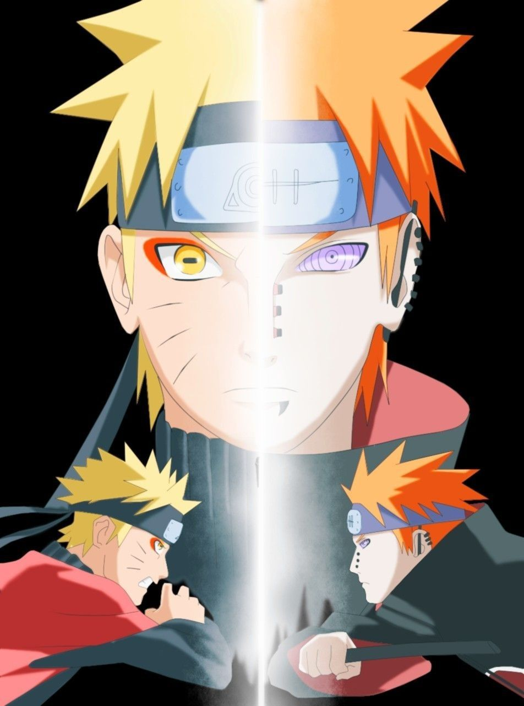

Se você acompanha Boruto ou pelo menos continuou assistindo Naruto Shippuden até o fim, provavelmente, se lembra do protagonista da franquia como um ninja extremamente poderoso; alguém em quem todos os personagens confiam.
Como bem sabemos, ele nem sempre foi assim. Não, longe disso. Toda a jornada de Naruto no primeiro período da história, que se encerra com Sasuke fugindo da Vila da Folha, inclui algumas pequenas vitórias e uma derrota retumbante.
